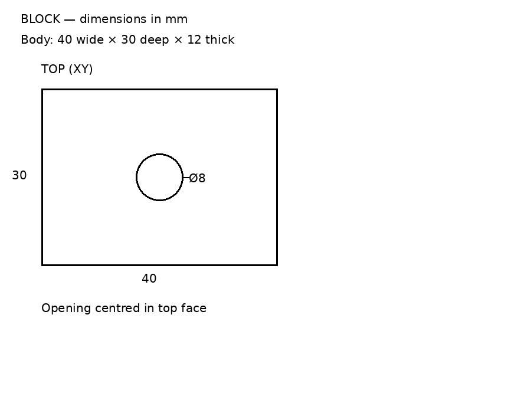
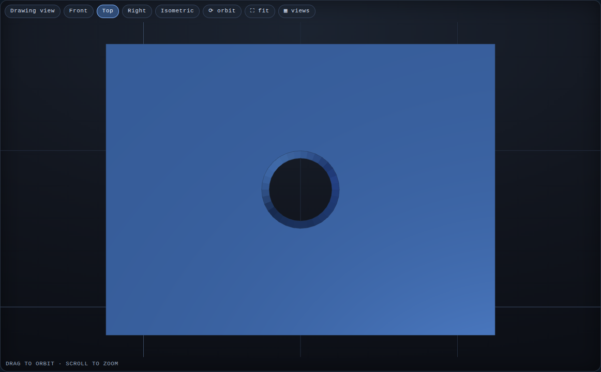
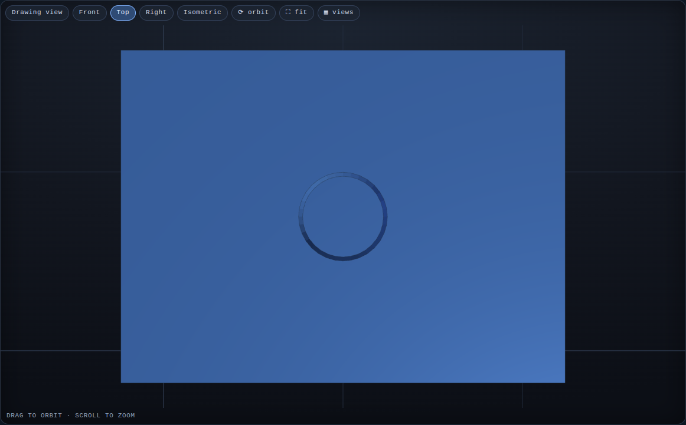

One drawing → one question → two different parts
Real model generation and app screenshots. Both outputs pass independent section and dimension checks.

Same drawing, empty notes
Through-hole: open through the block
Recess: bottom remains, depth 5 mm